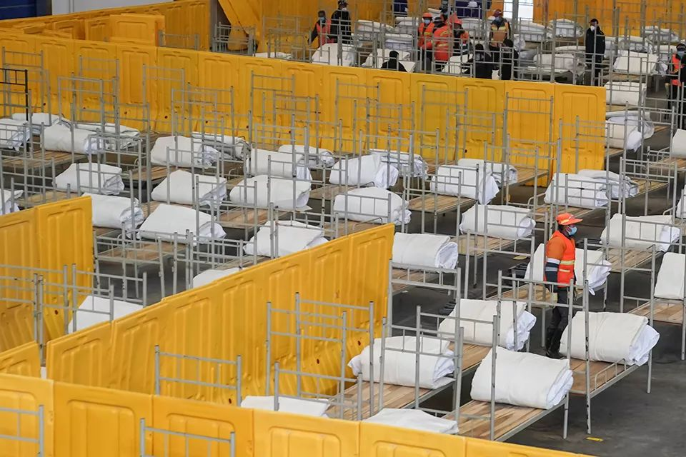

武汉新冠肺炎四类人员集中隔离，为何这么难？
原文链接 备份链接 为防止居家隔离造成交叉感染，从根本上控制感染源，武汉开始对确诊、疑似、发热及密切接触者进行集中收治和隔离。 具体执行中，劝服人员前往隔离点的工作很难。他们期待：能够对患者进行治疗，或者形成一条入院检测和就医的绿色通 …


*************▲*************2020年2月3日晚，3所“方舱医院”在武汉开建。这三处“方舱医院”位于武汉国际会展中心、洪山体育馆和武汉客厅，以收治新型冠状病毒感染的肺炎轻症患者为主。（新华社/图）
全文共4104字，阅读大约需要10分钟。
据南方周末记者不完全统计，截至2月4日24时，武汉市至少开辟了36个集中隔离点。
“按照要求，社区每天消毒三四次，但每次出去消完毒，防护服就不能用了。这样消耗下去，防护服很快就没了。”周慧说，“所以只好不穿。”
住进隔离点的第三天，陈珍的父亲终于被转至社区中心医院进行住院治疗。“接下来的事情就只有相信医生了。”
本文首发于南方周末 未经授权 不得转载
文 | 南方周末记者 杜思琪
南方周末实习生 任淼琳
责任编辑 | 吴筱羽
反复发热的第10天，2020年2月3日，武汉人陈珍的父亲被送去了集中隔离点，之前，她一度担心，被诊断有肺炎症状的父亲会传染给其他家人，继而“拖垮”整个家。
集中隔离点设于一家紧急改造的宾馆。一天前，武汉市新型肺炎防控指挥部发布第十号通告，决定自通告发布之日起，对全市经发热门诊诊断有肺炎症状的发热病人和新型冠状病毒感染的肺炎（下称“新冠肺炎”）病人的密切接触者，由各区安排车辆分别送至区集中隔离观察点。
政令自上而下传导，像湖面涟漪，自武汉市政府开始，在下辖区推行，迅速到达街道一级。防疫链条终端，社区是最后那道承压阀。
陈珍不知道的是，对链条终端的许多社区干部而言，“十号令”也是突如其来。南方周末记者了解到，集中隔离的最初两天，尽管有了隔离点，但尚无明确的隔离办法，还没有医护人员，也缺少药物。结果是，投诉电话又像雪片一样飞向社区。
武汉“封城”后的13天里，这样的情形每天都在上演。病人的煎熬，家人的焦灼与社区的压力相伴而生。病患者在寻求治疗的路上，和社区发生的磕碰乃至冲突，都折射出社会基层治理的复杂。
好在更细致的防疫机制启动了，社会压力有所缓解。据武汉市公布数据，截至2月4日24时，武汉市开辟了132个集中隔离点，12571张床位，集中隔离各类人员5425人。医疗和生活服务也在悄然跟上。
在此之前，武汉改造包括国际会展中心在内的三处“方舱医院”，提供3800张床位，主要收治确诊新冠肺炎的轻症患者。2月4日上午，完工的火神山医院收治了50名转院而来的病人。
也是在这一天，湖北省委书记蒋超良到武昌区检查疑似病人集中隔离点安置情况，强调要兑现“应收尽收，应治尽治”承诺。
1
“十号令”让陈珍看到了转机。
此前，被武汉市第三医院的医生诊断为高度疑似新冠肺炎的陈珍父亲，只能居家隔离。
父亲1月25日发病，陈珍从那天起就一直扑床位，但因为没有试剂盒，父亲始终无法确诊。
确诊，意味着可以排号住进医院。而父亲只能在家反复发烧：胸闷、乏力、呼吸困难，所有纠缠新冠肺炎患者的病痛也纠缠着他。
但这并非完全隔离。为了拿到药物和得到有效的诊断，他们不得不每天穿梭于武汉的大街小巷，往返于医院和住所。
在专家们来看，这样的疑似病例就像“行走的病毒”，不知道哪天会突然离去，更不知道身边人何时会“中招”。
2月2日下午，陈珍看到“十号令”便马上给保利社区打去电话。她回忆，当时社区工作人员告诉她，隔离点有专家治疗，“我才比较放心把爸爸带过去”。
2月3日一早，她开车把父亲送去了离家约三公里的隔离点。
这幢四星级标准、共16层297间房的宾馆在一天前被征辟为新冠肺炎疑似患者的集中隔离区。
在酒店大堂，陈珍被拦住了，工作人员态度明确，“只有要隔离的疑似患者可以上楼。”
陈珍目送父亲带着行李上了楼，她准备离开，正遇到一辆急救车载着医护人员来到酒店，工作人员告诉她，这是来给隔离患者做核酸检测以确诊的。
陈珍有些开心，特地发了一条微博：父亲发热的第十天，把爸爸送去了集中隔离点，现已有医生过去做核酸检测，希望一切顺利。
然而，父亲未如预想中迅速得到检测和救治。
当天下午，父亲再次呼吸困难，她借来一台家用制氧机送去。看到父亲情况不对，陈珍又带着父亲去医院排队做核酸检测，并输液治疗。
南方周末记者了解到，这个隔离点有七八名工作人员，除了送饭和一些去热的基本药物外，其余均需要患者自理。
陈珍在一个有一百多名隔离患者及家属的微信群里，几乎全天都有人请求工作人员配药送药、询问检测事宜、询问送饭时间、要求外出打针等等。
他们往往只等到三个字：“等通知。”
等到了2月3日深夜接近零点时，工作人员终于在群里通知，让病人去一楼做核酸检测。
南方周末记者多次联系该酒店工作人员，电话始终无人接听。但从硚口区某酒店工作人员处了解到，检测出来后，结果为阴性的人可以直接离开。确诊病人里，轻症继续在酒店隔离，重症则去医院。但他并不知道“医院的床位由谁安排”。
根据硚口区值班室工作人员2月3日向南方周末记者提供的说法，隔离点的实施不可能一步到位，吃住和治疗条件后期会跟上。
2
在仍然未明的防疫形势下，社区干部成了市民最容易联系的“管事人”，他们期盼能从这里获得帮助。
根据“十号令”要求，此次集中收治和隔离的包含“四类人员”。分别是：确诊的新冠肺炎患者、疑似患者、无法明确的发热患者、确诊患者的密切接触者。其中，重症确诊患者必须进入定点医院，重症疑似患者必须入院治疗。无法入院的轻症确诊和疑似患者，必须集中隔离，不得进行居家隔离。
然而，下沉到社区一级，有些社区得到的任务是隔离其中两类人员。
秦琦担任书记的汉阳区某社区就是如此。秦琦介绍，她带着社区9名工作人员，24小时值班，担负6个小区、共五千多人的疫情防控。“现在有3个确诊病例，其中1位住进了医院，另外2位居家隔离。”
在秦琦2月2日得到的通知里，他们可以组织社区居民前往某宾馆隔离。“但只有高度疑似和确诊患者的密切接触者才能去。”
何谓高度疑似？秦琦只能根据情况，凭感觉判断。“比如咳嗽很厉害，高烧不退，呼吸困难。”
综合南方周末记者对不同社区的采访，目前有两种路径可被集中隔离。一是社区主动联系，询问是否愿意；二是主动向社区申请，但如果条件不符合也会被拒绝。
寄居在硚口区某小区的高霞就是社区主动联系的。她常居孝感，1月13日丈夫开始反复发热，她才来到武汉。
2月3日，高霞告诉南方周末记者，来武汉后十多天后，丈夫被确诊为新冠肺炎，在1月31日仓促离世。没有体面的收拾，没有家属的告别，她只接到一张火化单。
丧夫之痛还来不及消化，高霞和儿子也开始出现发热症状。
医院没有床位，武汉一位朋友收留了母子俩居家隔离。“我儿子每天都要去华科附属同济医院打点滴，一次6至7瓶。”而她自己主要靠吃药来缓解症状。
2月2日中午，高霞接到社区干部的电话，让她带好生活必需品，下午有车接他们，往6公里外的酒店集中隔离。
本就寄人篱下，高霞决定和儿子前往。高霞母子遇到了和陈珍父亲相似的情况，进去后不能再出来，“那我孩子每天要打点滴怎么办？”
在这座有13个辖区，总面积8569.15平方公里的特大城市，高霞一时间不知何去何从。她再也忍不住，在电话里嚎啕大哭，和南方周末记者的电话也随即挂断。
第二天重新联系上时，他们已被安排到另一个隔离点。
3
作为疫情防控的第一道防线，社区也站在风险和矛盾的最前沿。
2月2日上午，突然而至的“十号令”，让汉阳区江堤街道某社区书记程华觉得“安慰了一些”。
在程华看来，集中隔离政策，初衷是为分担社区压力，降低居家隔离存在的风险。此前，他每天都戴着普通医用口罩、穿着一次性防护服，和居家隔离的确诊、疑似病人打交道。“我们也担心被感染，又传给其他居民和亲属。”
安慰很快转变为工作压力，因为政策的执行还得靠他们，如同11天前那样。
那是1月23日凌晨，武汉决定“封城”，以抑制疫情的扩散。夜色中，消息很快传达到社区里。
同时传达的，还有指挥部发来的“七号令”。“七号令”明确：全市各社区要全面排查所服务辖区发热病人。对于需要到发热门诊的病人，各区统一安排车辆送达指定发热门诊就诊；对于不需要到复诊门诊就诊的病人，由各社区落实居家观察，社区做好市民居家观察服务工作。
“一切来得太快了，所有人、物、事一窝蜂涌向了社区。”汉阳区江汉二桥街道某社区书记周慧2月4日对南方周末记者回忆。从1月24日开始，她就没停过。
比起江汉二桥街道其它几个社区，周慧管辖社区的疫情不算严重。整个社区尚无确诊病例，有5个疑似病例。但社区有七千多人，退休老人多，她还是担心在严重疫情之下，老年人成为病毒的目标。
封城的第一天，周慧和15名同事没有任何防护措施。1月26日，街道办开始陆续发放一次性口罩。又过了一天，他们得到了一些消毒水和100件防护服。
“按照要求，社区每天消毒三四次，但每次出去消完毒，防护服就不能用了。这样消耗下去，防护服很快就没了。”周慧说，“所以只好不穿。”
除了社区干部，在中国社会基层治理体系中，网格员扮演着重要角色。
从武汉市2019年公布的网格员数量来看，过去一年当地按照300-500户或常住人口1000人左右标准配备专兼职网格员，这个群体的数量达1.6万多名。以此计算，周慧所在的社区至少有7名网格员。
社区干部、网格员被动员起来，轮班倒连轴转。24小时，他们不停接到电话。
其中最多的是投诉电话。电话一接起，往往是连珠炮似的追问：为什么没有去医院的车？为什么还没床位？为什么还没安排隔离点？
周慧能做的是拿起笔，记录下来，汇报上去。然而，和自上而下的指令不一样，自下而上的反映，没有人知道它是否会在某一环节停下脚步。
这样的对话每天重复上演。
电话那头是焦急等待的居民，“你们老在说反映，但什么时候是个头？”
电话这头是疲惫不堪的工作人员，“从头到尾我们都在上报。”
社区工作人员和居民都疲惫到了极点，但争吵和投诉依然难以缓解。双方拉锯的起点和终点，都指向同一个问题，资源短缺。
在接受南方周末记者采访的多位社区书记看来，他们甘心做事，但现实是社区资源跟不上。
以“十号令”为例。根据政府公文，对不愿进行隔离的人可以采取强制措施，但能执行强制措施的只能是社区片警。“我们没这个权限，只能去对接，但对接总要花费时间的。”汉阳区江汉二桥街街道某社区书记告诉南方周末记者。
在他看来，当前居民诉求中最急迫的还是床位。拥有床位，意味着患者有了专业的隔离，从而切断传染源。短缺的床位、求治的诉求，让患者和家属不放过纷杂信息中的任何一条。
截至2月4日，武汉市28家定点医院，开放床位8254张，已用8182张。同一天，国家卫健委表示，正在从全国陆续调集医护人员、护士到武汉看护患者。同时，建成后可提供1600张床位收治病人的武汉雷神山医院也预计2月5日交付，两座医院只接收确诊病人。
2月4日晚上，陈珍又收到一个好消息和一个坏消息。
坏消息是，父亲的核酸检测结果出来了，第一次阳性。好消息是，集中隔离点工作人员开始在微信群里统计检测结果，称正安排部分检测结果为阳性的患者转诊住院。
2月5日，住进隔离点的第三天，陈珍的父亲终于被转至社区中心医院进行住院治疗。虽非大医院，但有床位、有医院收治，陈珍总算舒了一口气。“接下来的事情就只有相信医生了。”
（应受访者要求，文中所列名字均为化名）

征集

《南方周末》现向所有身处新冠肺炎一线的读者公开征集新闻线索。我们欢迎武汉及周边城市医患联系记者，提供防疫前线的一手资讯，讲述您的新春疫情见闻。若您不在武汉，但您身处之所也有与疫情相关的重要新闻线索，亦欢迎您与我们分享。疫情仍在蔓延，南方周末将执笔记录每位国人在疫情面前的希望与困境，与广大读者共同面对疫情。祝愿所有读者朋友们，新春平安。线索可直接给本篇文章留言，格式为：【线索】+内容+您的电话（绝对会对您的个人信息保密）
戳击下面图片 继续阅读专题


原文链接 备份链接 为防止居家隔离造成交叉感染，从根本上控制感染源，武汉开始对确诊、疑似、发热及密切接触者进行集中收治和隔离。 具体执行中，劝服人员前往隔离点的工作很难。他们期待：能够对患者进行治疗，或者形成一条入院检测和就医的绿色通 …
原文链接 备份链接 按照西安市要求，明天正式复工，公司陆续发了文件，统计能如期到岗的员工，集中办理小区出入的说明文件（西安部分小区已经封门，进出需要提供盖章材料，更严格者贴通知“上班外出后也不能再进小区，自己和单位协商找地方住”）。 我情 …
原文链接 备份链接 一床难求，这是治愈率与收治率失衡的结果 记者 | 吴洋洋 编辑 | 王姗姗 图表资料整理 | 实习记者 文思敏、袁颖 制图 | 程 星 “2月5日当日，市指挥部宣传组对网友在各类互联网平台发布本人或亲友的求助信息做核 …
原文链接 备份链接 在医学专家们看来，集中收留、隔离是第一步。接下来对疑似病患的确诊、分类诊治、收治入院，将是对医疗、物资、人员分配等多重资源配置能力的综合考验，相信各方面群策群力可以渡过难关 文 |《财经》 …
原文链接 备份链接 在医学专家们看来，集中收留、隔离是第一步。接下来对疑似病患的确诊、分类诊治、收治入院，将是对医疗、物资、人员分配等多重资源配置能力的综合考验，相信各方面群策群力可以渡过难关 2月3号上午8点，人们在七医院门口排队等待核 …